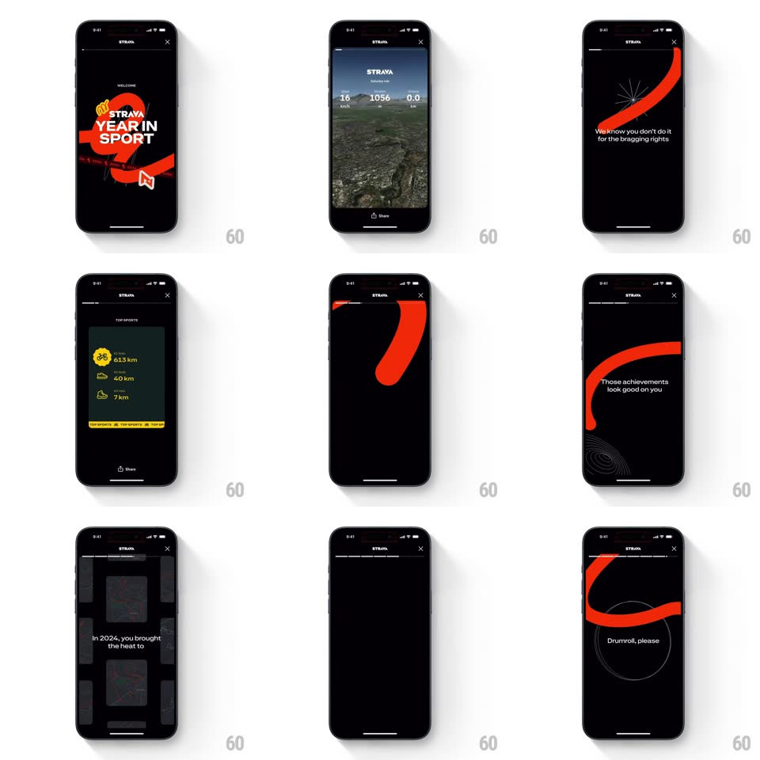

Media
Frame-by-frame

Rebuild this animation 1:1: Strava's Year in Sport story - a red-ribbon title sequence, a 3D satellite map flyover of your year, staggered stat cards (Top Sports, Longest Streak, Your Playbook, Personal Heatmap), each ending on a Share button.

Rebuild this animation 1:1: Strava's Year in Sport story - a red-ribbon title sequence, a 3D satellite map flyover of your year, staggered stat cards (Top Sports, Longest Streak, Your Playbook, Personal Heatmap), each ending on a Share button.
## Integration
Integration: stack-agnostic spec - springs given as stiffness/damping, timed motions as duration + curve; map every value to your framework and animation library of choice.
## Scene
A black Strava story: "Rewarding your biggest moments..." loader; the title card - a giant red ribbon S around "STRAVA YEAR IN SPORT"; a 3D satellite city map with an orange route line and "23 activities / 1056 / 0.5" stats; "We know you don't do it for the bragging rights - but just in case, here's the good stuff"; "Top Sports" card (ride 613 km, run 40 km, walk 7 km); "Longest Streak" flame card ("8 Day Streak", "You streaked longer than 85% of people"); "Your Playbook" stacked mini-cards (Sunday, 7pm-8pm, 40m); "Personal Heatmap" dark map; "Drumroll, please" teaser.
## Motion spec
Pattern: multi-screen story with 3D map flyovers and staggered card reveals.
- The loader's red ribbon draws in (stroke reveal, 800ms) then swells into the title card's giant S (scale + rotation settle, spring ~300/16) as "YEAR IN SPORT" stamps letter by letter (40ms per letter).
- The map scene is a true 3D flyover: the camera pushes in and tilts over the satellite city (600ms, ease-out) while the orange route traces itself along the streets (path draw, 1.2s) and the stat chips stagger in (80ms apart).
- Copy screens set line by line (150ms apart, 18px rise), the red ribbon sweeping across between scenes as the wipe (400ms).
- Stat cards build top-down: header, then rows stagger in (70ms apart, 16px slide), the footnote bar last; each card carries its own accent (orange flame, yellow footer).
- The Playbook's mini-cards fan in from a stack (each rotating +/-3deg to 0, spring ~340/15, 90ms apart).
- Every screen ends with Share visible - each card is its own artifact.
## Calibration
- The pace is athletic - hard cuts, quick staggers, nothing floats.
- Maps are dark with orange routes - Strava's night-mode brand holds through every scene.
## Reduced motion
Scenes crossfade (300ms); cards fade in complete; route appears drawn.
## Don't miss
- The copy is wry ("We know you don't do it for the bragging rights...") - keep the self-aware tone.
- "Drumroll, please" teases the finale - the ellipsis does the suspense.